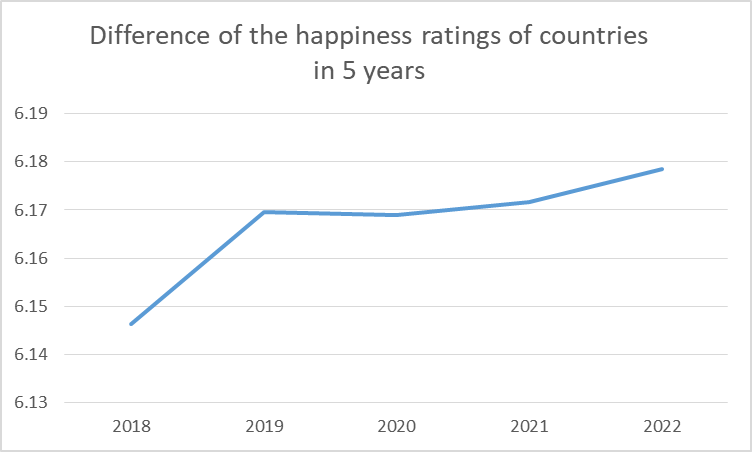

The chart shows the tally of the continents which has the most high rating of happiness from 2018 to 2022. By observing, we can see that Europe has 55% of the high ratings. With this, we can conclude that Europe has most of the people that are happy during 2018 to 2022.
The chart shows the tally of the continents which has most of the low ratings of happiness from 2018 to 2022. With Asia's 65.7% part, we can conclude that Asia has most of the people who are sad or not really happy during 2018 to 2022.
Using these charts as reference, we can conclude that all of Australia's countries are having a high happiness rating while all of the countries from Africa that is included in our data (considering the fact that our data is sample), has a low happiness rating.
In Summary:
The line graph shows that the year 2022 is the happiest year (in the range of 2018-2022) for most of the people in the world.